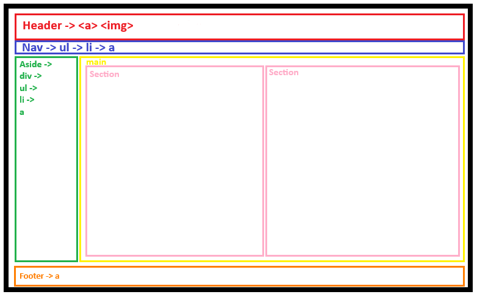

LAYOUT

La pagina web se basa en una imagen de header, un menú de navegación justo debajo y otro lateral que se mantienen intactos en todas las secciones de la página.
El contenido que sufre variaciones se agrupa en main, donde en funcion de las necesidades se agregan secciones u otros elementos.
La página ha sido ajustada a una pantalla de escala 16:9, por lo que si se abre en una pantalla de dimensiones diferentes puede sufrir algunos cambios.